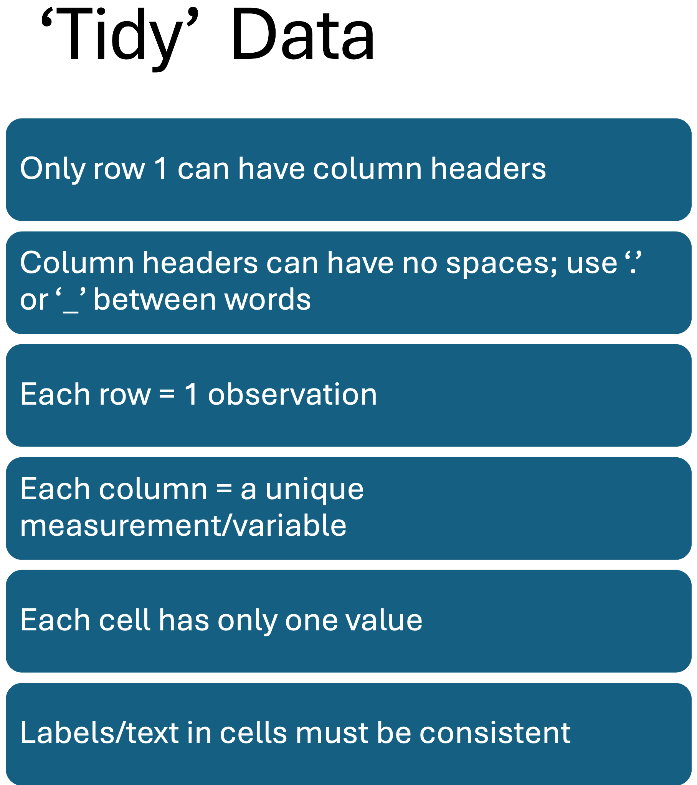
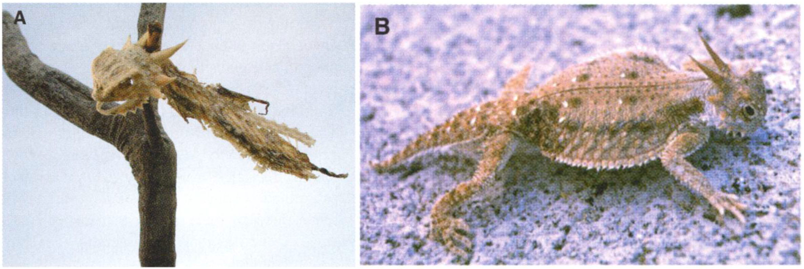
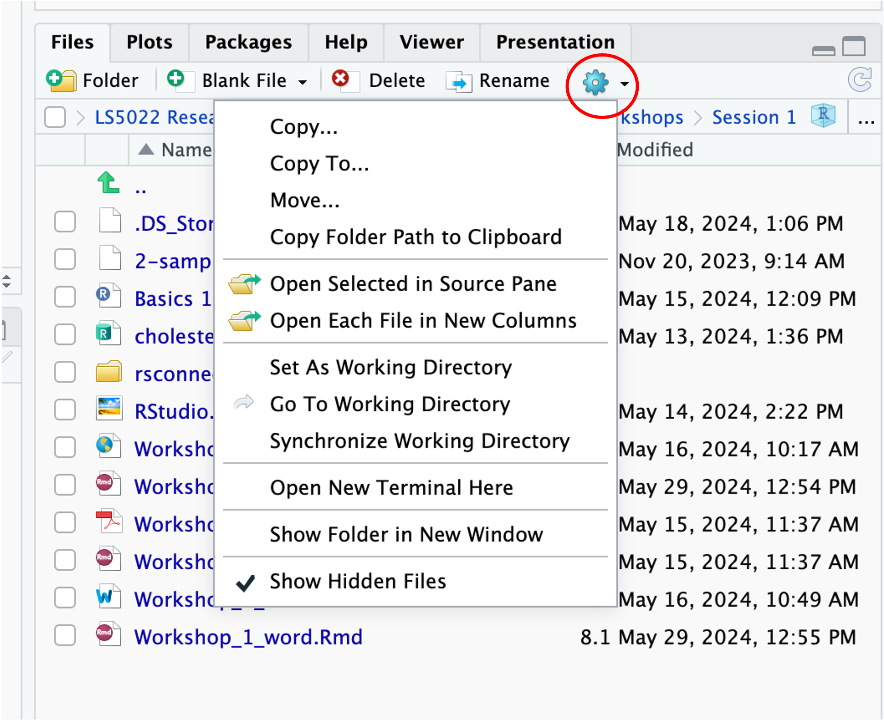

library(tidyverse)
library(psych)
library(rio)Workshop session 2
Importing ‘tidy’ data to RStudio
This workshop is designed to get you started in importing Excel and csv spreadsheets to RStudio. The first thing you should do is to ensure that your spreadsheet is arranged in a ‘tidy’ format.
You always need to load the packages that you need to use for a session:
Click to see packages to load (Copy and paste to Script editor)
CLICK ON THE TAB ‘TIDY DATA’ BELOW TO GET STARTED.
In Excel, make sure your data is ‘tidy’ before trying to import it to RStudio. The basic rules of tidy data are:

So, for example, this data of passengers on the RMS Titanic is tidy:
{kind=link}
{kind=link}
TASK:
- Go to Canvas and download the file
HornedLizards_unstacked.csv. - Open the file in Excel and arrange the data to make it tidy in preparation for importing it to RStudio.
- Save the tidy file as HornedLizards.csv and either (a) upload it to RStudio on Posit cloud or (b) save it to a folder on your laptop (depending on how you are using RStudio - on the cloud or on your laptop).
Background: Horned lizards have spikes around the head.
A study investigated whether or not the spikes protected lizards against predation by shrikes – birds that skewer its victims on thorns to save for eating later.
They measured (a) length of horns on lizards skewered on spikes and (b) length of horns on lizards that were alive.

Once you have prepared your xlsx or csv file for importing, you can import the file to RStudio.
1. First, in RStudio go to the folder where your excel or csv file is located (using the Files directory in RStudio).
Set this location (where the file is and where you want to save your work) as your working directory by clicking on the ‘More’ cog icon and selecting Set As Working Directory.

2. Import the tidy ‘HornedLizards.csv’ file that you have created.
The easiest way to import spreadsheets is to use the import() function from the rio package (use install.packages("rio") to install it if it is not already installed in your RStudio):
HornedLizard <- import('HornedLizards.csv')- 1
-
Imports the csv file and stores it as a dataframe object called
HornedLizard
Here, the csv file is imported and stored in an object called ‘HornedLizard’. This object is a dataframe.
(a) Use the head() function to see the 1st 6 rows of the dataframe:
head(HornedLizard)
(b) You can view the entire dataframe in RStudio with:
view(HornedLizard)or even more simply by clicking the name of the dataframe in the Environment.
(c) You can see summary descriptive data (using the describeBy() function from the psych package)
describeBy(squamosalHornLength ~ Survival, data = HornedLizard)- 1
-
Gets descriptives statistics for the
squamosalHornLengthvariable grouped by theSurvivalgroups.
(d) We can see the data types of the variables here:
HornedLizard |>
summarise_all(class)- 1
- Uses a ‘pipe’ (|>) to send the HornedLizard dataframe to the summarise_all(class) function.
Missing values are imported as ‘NA’ in R.
You can see how many missing values are in any column with:
HornedLizard |>
summarise(count = sum(is.na(squamosalHornLength)))- 1
- Pipes the HornedLizard dataframe to the summarise() function to count missing values (‘na’)
You can see that there is one row with missing measurements.
You can view this row alone with the filter() function:
HornedLizard |>
filter(is.na(squamosalHornLength))- 1
- Pipes the HornedLizard dataframe to the filter() function which filters any rows with ‘na’ in the squamosalHornLength column
and you can remove this row with:
HornedLizard <- HornedLizard |>
filter(!is.na(squamosalHornLength))- 1
-
Filters only those rows with no ‘na’ values
NB I have over-written the dataframe by storing this result without the NA values in the same dataframe name
NB2 The following code will do the same thing:
HornedLizard |>
drop_na(squamosalHornLength)
(removing all rows with NA in the squamosalHornLength column)
Data can be numeric, integer, character or factor. R attempts to identify the type when you import data:
Numeric (with decimal places - shown as ‘dbl’) and integer are numeric data (dbl or int)
Character is text (chr)
Factors are when characters or numbers are used to identify categories or groups (fct)
We can see what the data types are:
HornedLizard |>
summarise_all(class)
However, the Survival consists of categories (‘living’ or ‘killed’). So, we want to convert this column, Survival, to a factor, and save as an updated dataframe (‘HL_revised’):
HL_revised <- HornedLizard |>
mutate(Survival = as.factor(Survival))
HL_revised |>
summarise_all(class)
FINALLY, now that the dataframe is cleaned and ready, save it as an RData file.
This means that you do not have to import the csv file and clean it up all over again! You can just upload the RData file which will provide the saved, updated dataframe.
save(HL_revised, file = "HL_revised.RData")This saves the RData file in your working directory.
To open the dataframe in future, either click on the RData file in the Files tab in the RStudio Files Directory or:
load(file = "HL_revised.RData")
(assuming you have set this as your working directory again)
Our data is now ready for analysis!
You can watch a short video in which I carry out the commands referred to in these notes in RStudio.
You can watch the video from Canvas by clicking hereAll of this and so much more is freely available in an on-line book called:
R for Data Science which can be found at:
R for Data Science (click on this link)
This is a great reference source for using R to manage data. It also contains 3 chapters on creating graphic visualisations using the package ggplot2 which we will be using in later sessions.
It does not, however, include how to carry out statistical analyses.